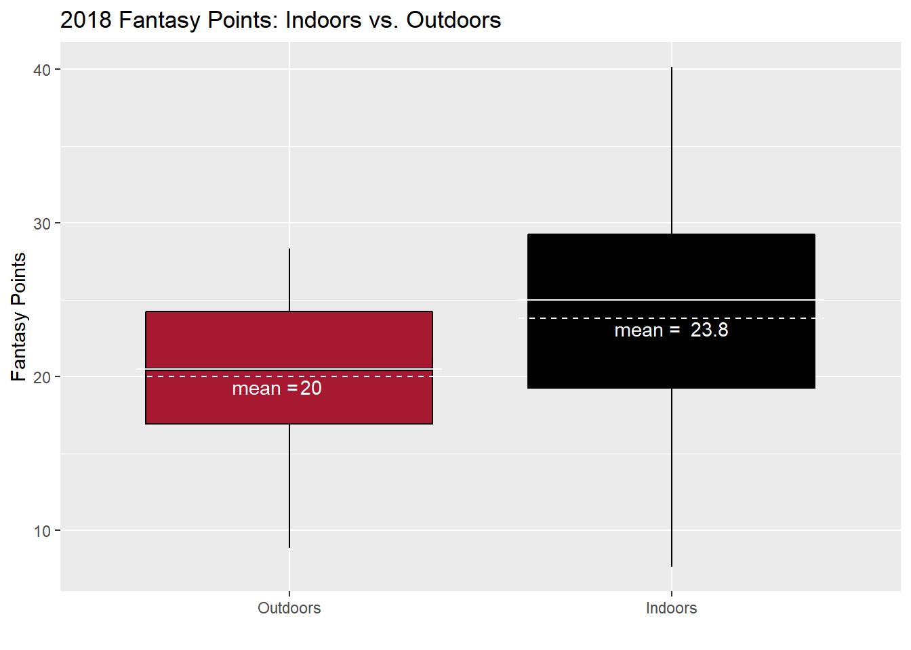
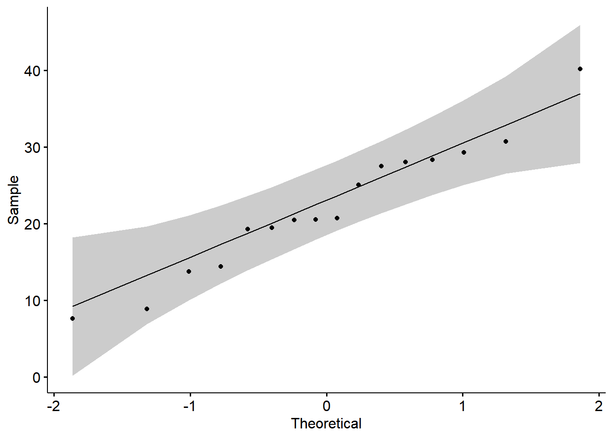
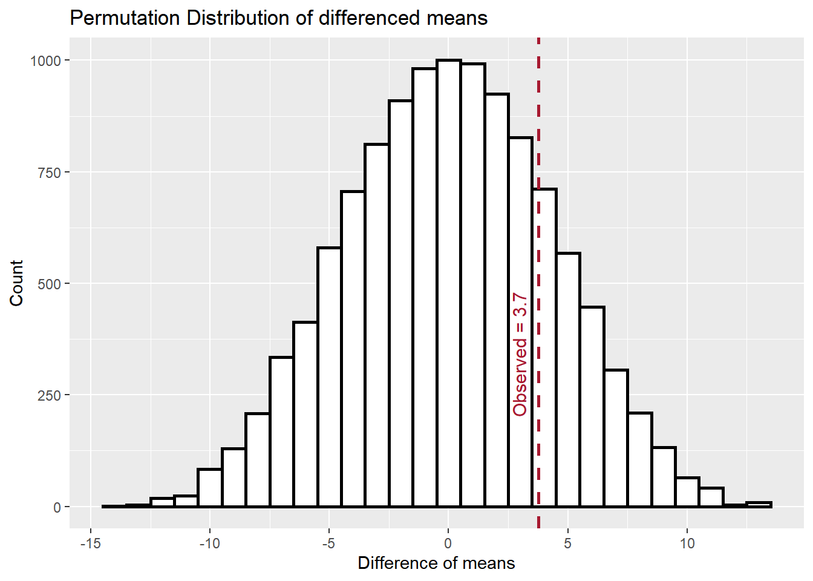

In a Pro Football Focus article “96 stats – 3 fantasy football stats for every NFL team for 2019”, Scott Barret compares Atlanta Falcons quarterback Matt Ryan’s fantasy points when player indoors vs. outdoors. He says,
“[…] 2B. Throughout his career, 26 of Ryan’s 37 highest-scoring fantasy games (70%) have come in a dome. Last year he averaged 23.8 fantasy points per game in a dome but only 20.1 fantasy points per game when playing outdoors. 2C. He plays outdoors in only three of 16 games this season.””
Although Barret doesn’t expand on these stats, it’s easy to decipher what he is implying. Matt Ryan’s higher per game fantasy point average indoors for 2018, combined with his unique schedule in 2018, is reason to think Matt Ryan is a good draft pick for fantasy team owners in upcoming fantasy drafts.
Ryan’s 2019 schedule is certainly unique. He doesn’t play outdoors until week 11 at Carolina and only plays two games outdoors during a typical 16 week fantasy football season. At a glance, Barret’s statement seems to hold some weight. More games indoors should result in more fantasy points. However, we’re taking about 3.7 more points per game. Do we think that will make a big enough difference to matter? Lets dive into the data and see if we can find any evidence to conclude that Matt Ryan’s schedule is a reason to move him up fantasy owner’s draft boards.
Lets first visualize Ryan’s 2018 season. Here is box plot of fantasy points from each game seperated by whether the game was played in an indoor or outdoor stadium.

While the figure above might not be the most useful in terms of drawing a conclusion, it does give us an idea of what the data looks like. I believe the boxplot is most useful in picturing the variability of the data. We see that the variability in fantasy scores from games played indoors is larger than the variability from games played outdoors. This could be important when deciding which test we use since we sometimes assume our data comes from groups with equal variance.
Let’s formally test whether Matt Ryan really scored more fantasy points indoors than he did outdoors in 2018. Since we are comparing the means of two groups, a two-sample t-test seems to be the obvious choice. The two-sample t-test does come with some assumptions however. I won’t go through all the assumptions but three of them are at least interesting enough to talk about.

##
## Shapiro-Wilk normality test
##
## data: Year.2018$Fant.Pts
## W = 0.9666, p-value = 0.7809The QQ-norm plot compares the quantiles from our data to the theoretical quantiles you’d expect to see from a normal distribution. We see here that our points lie (roughly) on the line. We can also use the Shapiro-Wilk test to check the normality assumption. A large p-value here is a good thing. I think it is safe to assume normality.
##
## F test to compare two variances
##
## data: Year.2018$Fant.Pts[Year.2018$Dome == "Y"] and Year.2018$Fant.Pts[Year.2018$Dome == "N"]
## F = 1.9473, num df = 8, denom df = 6, p-value = 0.4323
## alternative hypothesis: true ratio of variances is not equal to 1
## 95 percent confidence interval:
## 0.3477628 9.0584349
## sample estimates:
## ratio of variances
## 1.94734Like the normality test, we also get a large p-value. It is probably
safe to assume equal variance. When we run the t-test below, we are
going to use Welch’s two-sample t-test. This variation of the t-test is
used when we don’t want to assume equal variance. It is also the default
setting when using the t.test() function in r. I decided
not to change it because our conclusion is very nearly equal when
running both variations of the t-test.
Let’s test!
##
## Welch Two Sample t-test
##
## data: Fant.Pts by Dome
## t = -0.90571, df = 13.946, p-value = 0.8098
## alternative hypothesis: true difference in means between group N and group Y is greater than 0
## 95 percent confidence interval:
## -11.11322 Inf
## sample estimates:
## mean in group N mean in group Y
## 20.00000 23.77333From the output of the t-test() function, we conclude
that the Matt Ryan’s average fantasy score indoors is not significantly
greater than his average fantasy score outdoors in 2018. I don’t think
this is a surprising conclusion given what we saw in the box plot. The
difference in average fantasy points is just not that big, especially
when we consider the variability between Ryan’s scores.
In the t-test performed above, we discussed whether we believe some assumptions about our data were true. I felt like we were probably OK to perform the t-test but we do have options if we don’t think our data meet those assumptions. Enter nonparametric methods.
The cool thing about using nonparametric methods is that we don’t have the burden of meeting all those assumptions like before. Instead, all we need is that the data is continuous. That is, it can take on any value not just discrete values. That is a pretty easy assumption to check off in this example because fantasy points can take on any value. Unfortunately, like most things in life, the pros are balanced by the cons. If the assumptions we discussed before are met, a parametric test is better at detecting an effect than a nonparametric test. However, it’s pretty difficult to screw up a nonparametric test by making an incorrect assumption. One reason I enjoy using nonparamtric tests is that they are fairly easy to understand and therefore easy to explain to an audience that probably doesn’t remember that intro to statistics class they took freshmen year.
For this example, we’ll perform a two-sample permutation test to compare the difference of two means. For this test, we’ll pretend that the labels of “indoor” and “outdoor” is arbitrary. We’re pretending that it is just as likely that Matt Ryan scored those fantasy points indoors than he did outdoors. The test is performed using these steps:
Calculate every possible combination of “indoor” and “outdoor” labels for all 16 games from 2018. It turns out there are 11,440 possible combinations.
For every combination calculated in step 1, calculate the difference between the mean fantasy scores for games played indoors and games played outdoors.
After we have all of these differenced means we can create whats called a permutation distribution. The permutation distribution contains all the possible differences in mean scores between indoor and outdoor games that we calculated in step 2.
Let’s perform our test.

## [1] 0.201049In the figure above, we’ve compared our observed difference in mean fantasy score between indoor and outdoor games to the permutation distribution. We see that what we observed in 2018 appears in a high density region of the histogram. This tell us that what we observed is pretty likely compared to all possible outcomes. We can even compute a p-value using the permutation distribution. This is calculated as the number of observed differenced means greater than what we observed divided by the total number of observed difference in means. We obtained a p-value of about 0.20 so we do not have enough evidence to conclude that Matt Ryan performed better indoors than he did outdoors in 2018.
We did not find evidence to suggest that Matt Ryan’s true average fantasy points score indoors is greater than his true average fantasy points score outdoors. If we just look at the data and the spread of Matt Ryan’s scores I don’t think this is a surprising conclusion. Matt Ryan had games where he scored seven and eight points while also having a 30 and a 40 point game. A large majority of his scores were between 19 and 28 points. An average difference of 3.7 points is just not that much.
After performing a t-test and it’s nonparametric equivalent, we find that Matt Ryan’s true average fantasy points scored indoors is not different that his true average fantasy points scored outdoors.